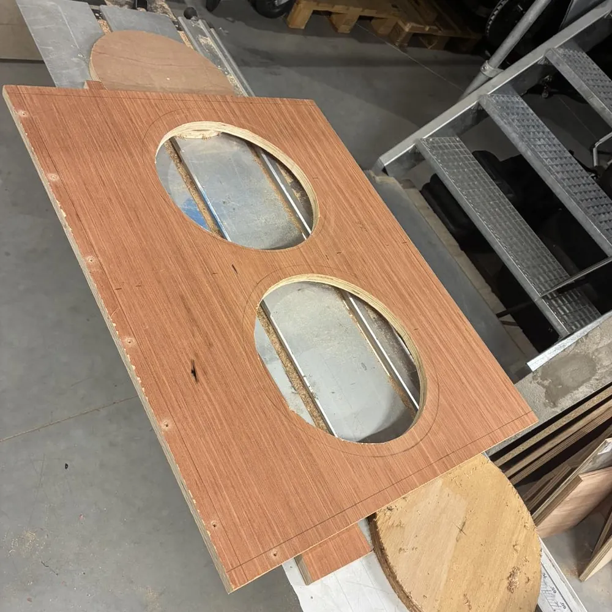
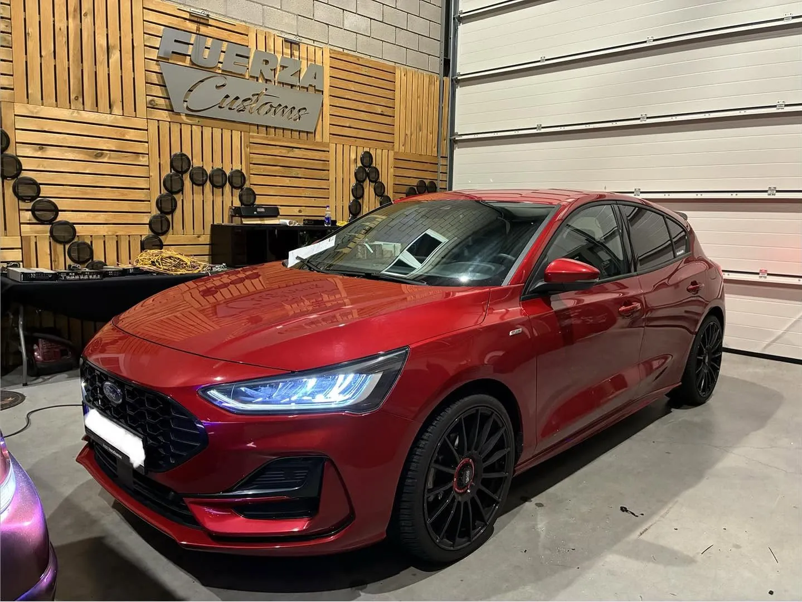
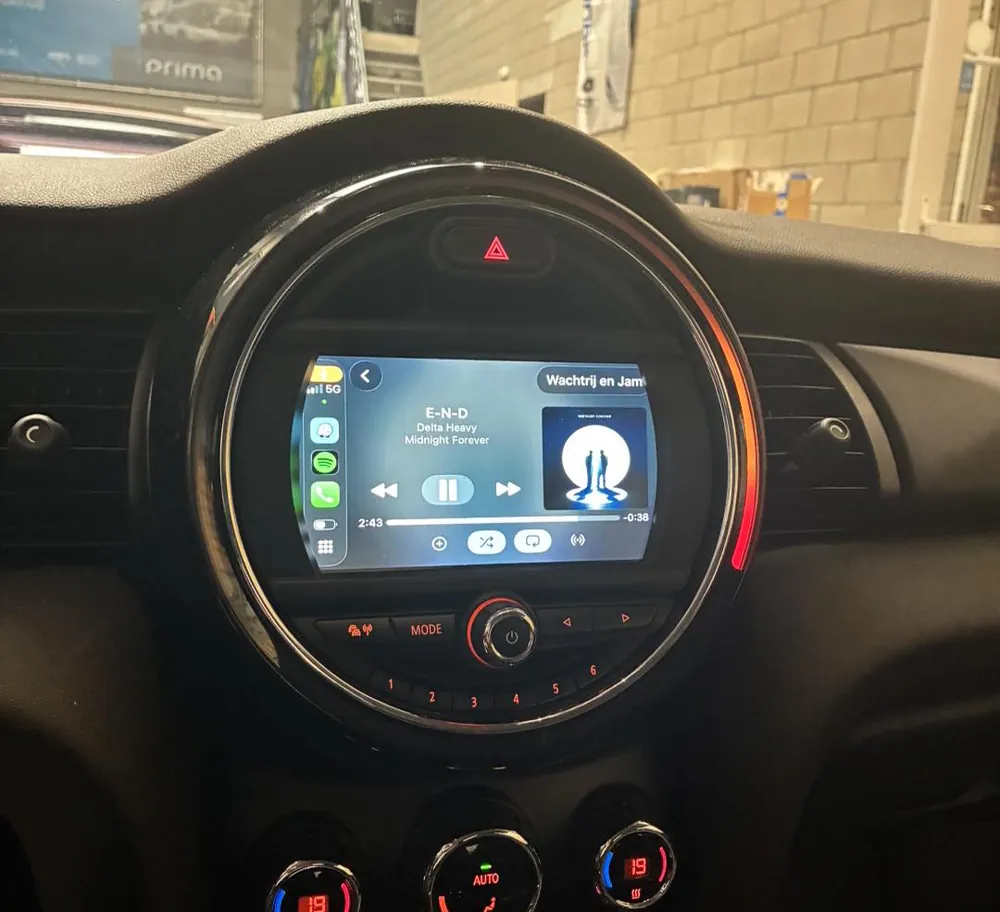
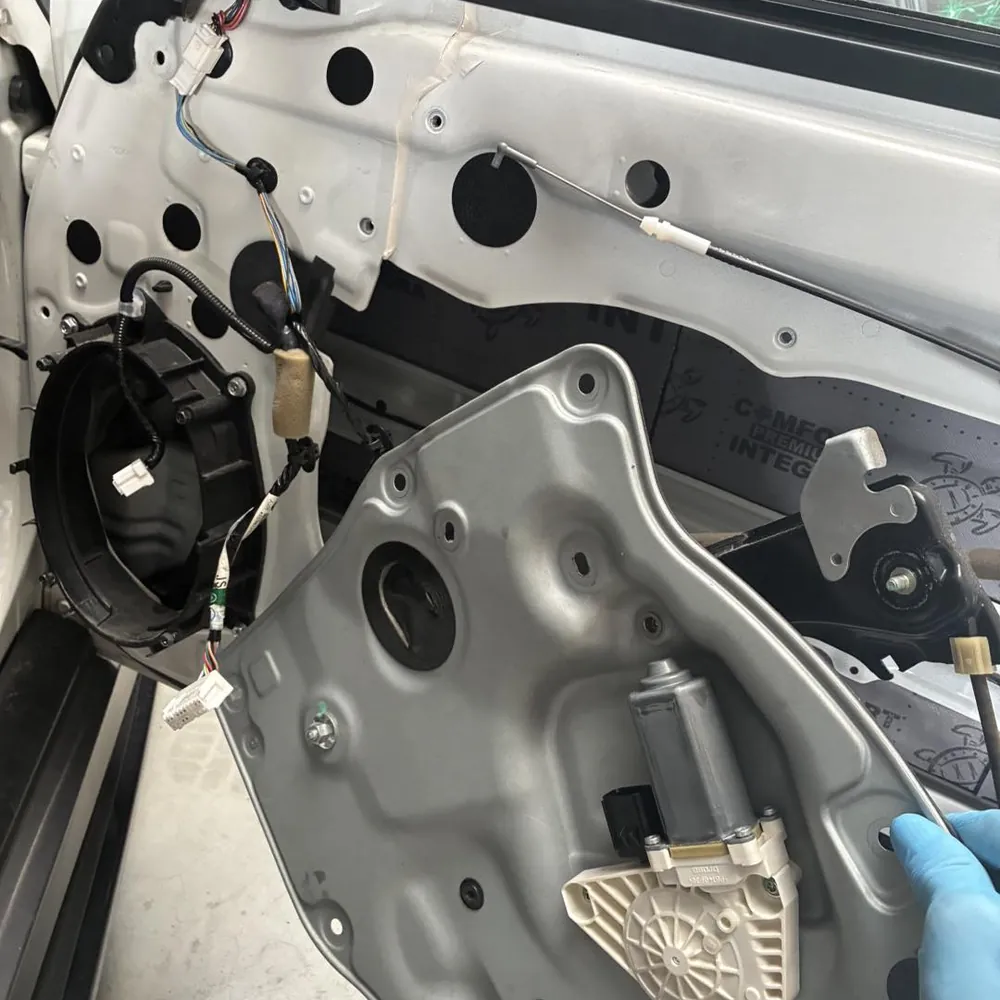
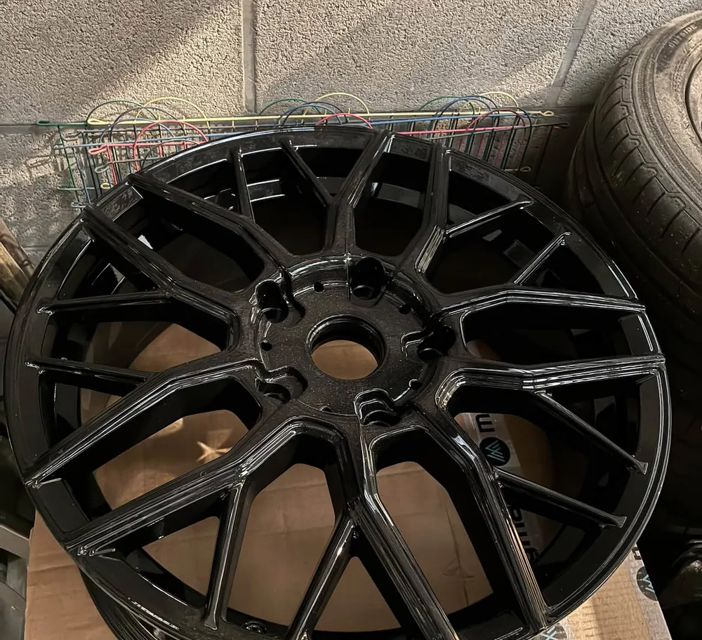
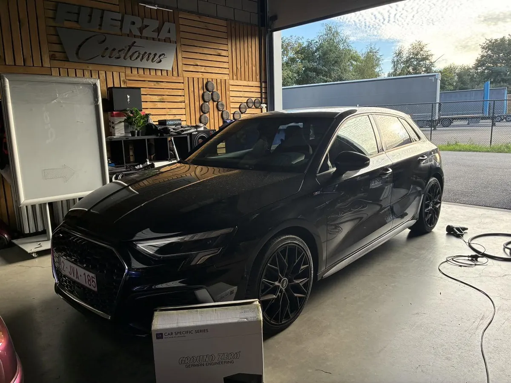
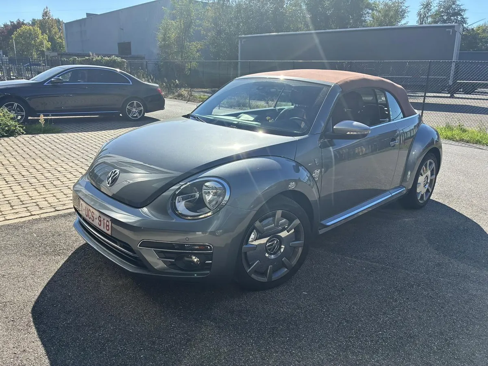
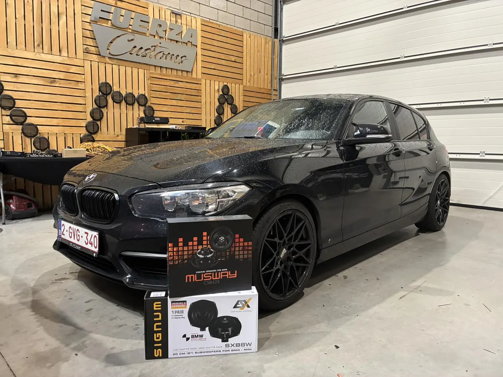

Car audio
Versterkers, speakers en subwoofers. Waar nodig maken we de inbouw zelf op maat.
Speakers, subwoofers, Apple CarPlay, camera's en velgen. Bjorn bouwt het in zijn werkplaats in Heusden-Zolder in, netjes weggewerkt en zo dat het past bij jouw wagen en jouw budget.

Een camera plaatsen of je hele audiosysteem vervangen: bij Fuerza wordt altijd gekeken naar de oplossing die het best bij jou past, of je nu een groot of klein budget hebt.

Versterkers, speakers en subwoofers. Waar nodig maken we de inbouw zelf op maat.

Apple CarPlay en Android Auto op je originele scherm, met de looks van je wagen.

Dempingsmateriaal in deuren en panelen. Minder rammel, meer rust en een strakker geluid.

Nieuwe velgen kiezen of je eigen set laten opfrissen, zoals deze in blinkend zwart.
Elke wagen is anders. Daarom zoeken we per auto de oplossing die past, zonder dat je er na de inbouw nog iets van ziet.

Meer bas zonder veel plaatsverlies, met een actieve downfire subwoofer van Ground Zero.

Een pasklare ESX-unit: draadloos Apple CarPlay en Android Auto, met de originele VW-looks.

Een volle zaterdag in de werkplaats. De eerste wagen staat al in behandeling.

2007Heusden-ZolderFuerza begon in 2007 vanuit een grote liefde voor auto's. Die hobby groeide buiten proportie, en vandaag verdient oprichter Bjorn Rogiers er elke dag zijn brood mee. Samen met zijn partner neemt hij de tijd voor elke klant, ook als je zelf wil inbouwen en gewoon goed advies zoekt.
Buiten de werkplaats vind je ons tussen de liefhebbers: met de Nissan Skyline R33 GT-ST op beurzen, en op de Fuerza Car Meet bij ons in Heusden-Zolder.
Topservice gehad van Björn van Fuerza Customs. Via Fuerza Customs een module van CAR Options (Apple CarPlay) laten installeren en perfecte service na verkoop gehad! Een aanrader voor elke liefhebber!
De eigenaar van de zaak is zeer vriendelijk,behulpzaam en is heel goed in zijn vak. Ik heb een audio upgrade laten uitvoeren bij mijn auto, het geleverd werk is top.
Voor iedereen die geïnteresseerd is in car audio,voor het te laten inbouwen of zelf inbouwen, deze man weet waar hij mee bezig is! En naar mijn ervaring een man van zijn woord! Ga zo verder top zaak💯
Vertel ons welke wagen je hebt en wat je wil. We denken mee en plannen samen een moment in de werkplaats.
| Maandag | 12u30 tot 18u |
| Dinsdag | 12u30 tot 18u |
| Woensdag | Gesloten |
| Donderdag | 12u30 tot 18u |
| Vrijdag | 9u tot 14u |
| Zaterdag | 9u tot 17u |
| Zondag | Gesloten |
Op Instagram melden we het als we op een beurs staan en de zaak dicht is.
Ik maakte deze demo voor jullie om te tonen wat er kan. Na een kort gesprek maak ik er iets veel persoonlijkers van, helemaal naar jullie wens.
Vrijblijvend. Ik kom langs of we bellen.
Op maat, op jullie eigen domein.
Geen voorschot. Jullie betalen pas als alles klaar is.
Hosting, domeinnaam en kleine wijzigingen, zoals nieuwe openingsuren.
Omdat een voorbeeld meer zegt dan een mail. Zo zien jullie meteen wat er kan, en het kost jullie niets.
Nee. Het gesprek is vrijblijvend. Vinden jullie het niks, dan is het daarmee gedaan.
Na ons gesprek staat jullie site binnen 10 tot 14 dagen online.
Zeker. Jullie domeinnaam kan gewoon blijven, de nieuwe site komt in de plaats van de oude.
Nee, dat doe ik op basis van ons gesprek. Eigen foto's zijn mooi meegenomen, maar niet nodig om te starten.